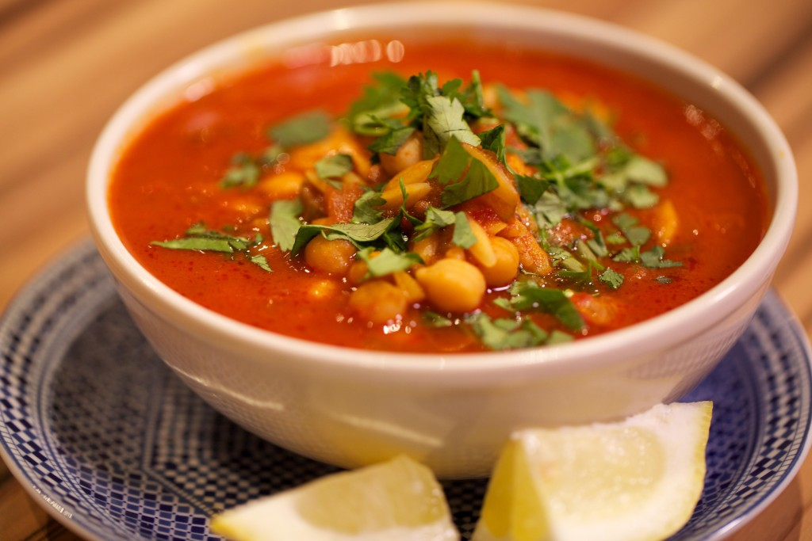

Soep
Deze soep kan prima bij een avondmaaltijd, maar is ook een lekker voorgerecht.
ingrediënten
- 300 gram lamsvleess
- 500 gram tomaten
- 2 ui
- 5 tenen knoflook
- 2 blikken tomatenpuree
Bereidingswijze
- Snijd de uien en tomaten in kleine stukjes.
- Gooi de tomatenpuree en tomaten stukjes in de pan met 200 ml water.
- bak het lamsvlees en voeg het toe aan de pan samen met de uitjes.
- voeg daarna de 5 tenen knoflook versnipperd toe.
- laat de soep voor vijf minuten op laag vuur staan, daarna serveren in kom.

Tip. Lekker samen met een glas franse wijn.